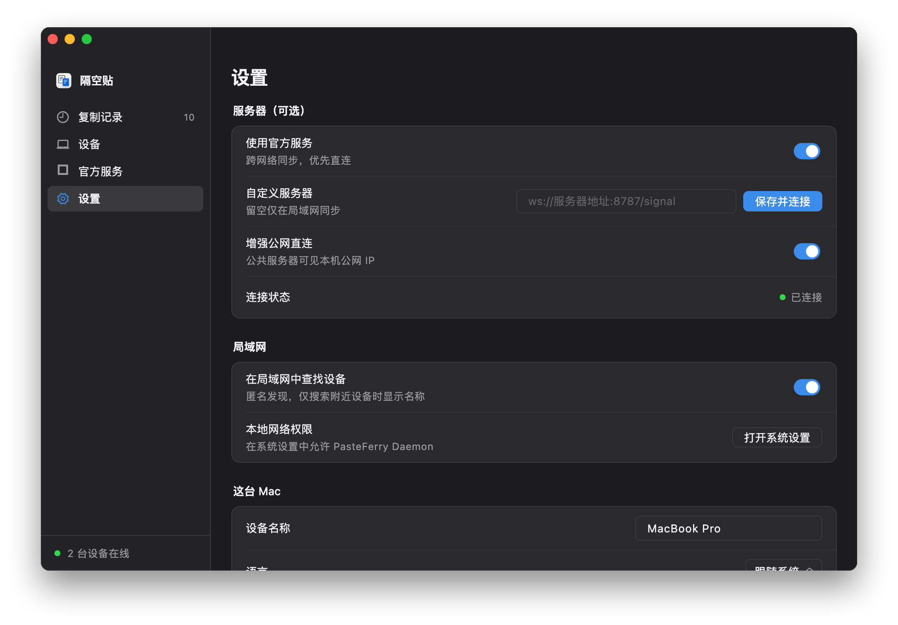
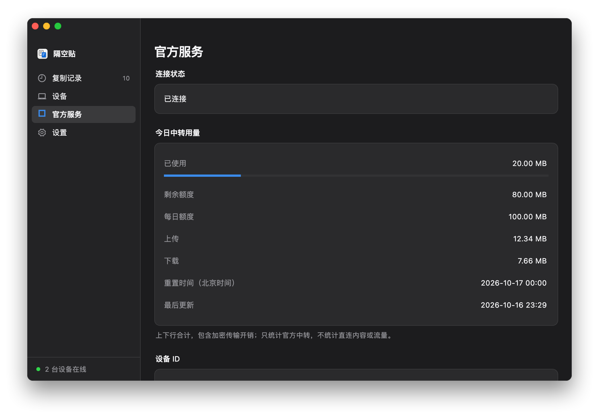

三个步骤，开始跨网络同步
- 在需要同步的每台电脑上安装最新版本，启用后台同步。
- 在每台电脑的「设置」中开启「使用官方服务」，阅读并确认必要统计说明。不用填写官方域名或端口。
- 一台生成配对码，另一台输入；核对两边的安全指纹后确认。已有配对关系可以继续使用。

先直连，再中转
官方信令只帮助在线设备交换连接信息。客户端先用 STUN 探测和打洞；本轮直连失败后，才申请官方中转。传输内容始终端到端加密。
直连不消耗中转额度
当前默认每机器额度组每日 100 MB 中转流量，上传与下载合计，北京时间零点重置。重新安装不会保证获得新额度。用量页显示实际额度、剩余量与更新时间；额度用尽仍可直连。额度与服务可用性可能调整，以客户端显示为准。
由你决定是否开启
新安装默认关闭。开启后记录必要接入统计；仅申请中转时派生项目专用机器摘要。真实设备名、原始系统标识和复制内容不会作为统计上传。完整字段与保留期限见隐私说明。
仍可独立自建
局域网、自定义服务器和 Tailscale 继续可用，不依赖官方网关。需要自行管理容量时，可选择自建公网服务器；在自定义地址旁点击「保存并连接」。
